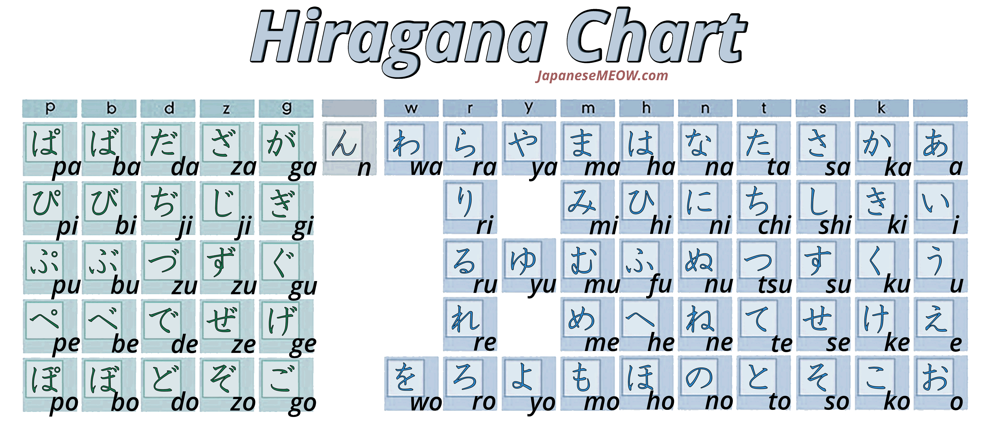
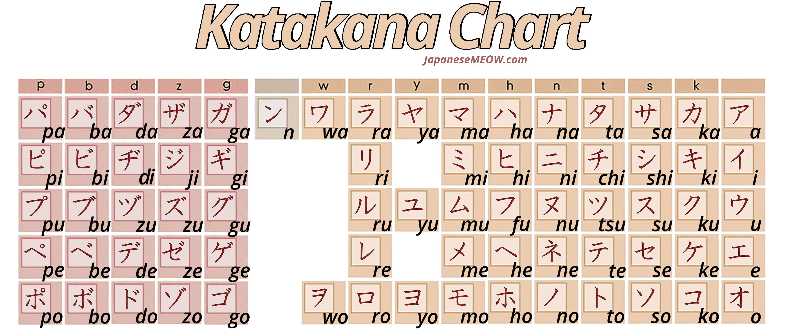
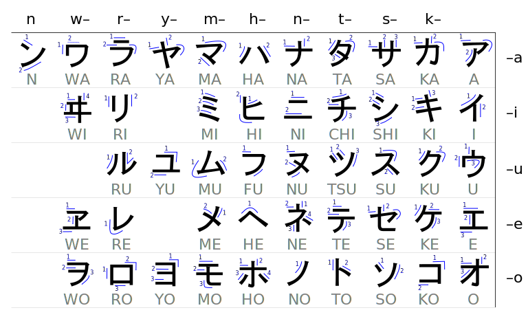
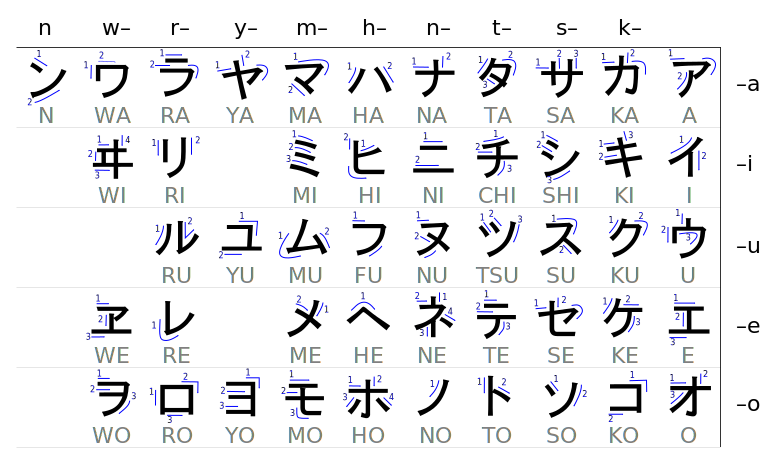
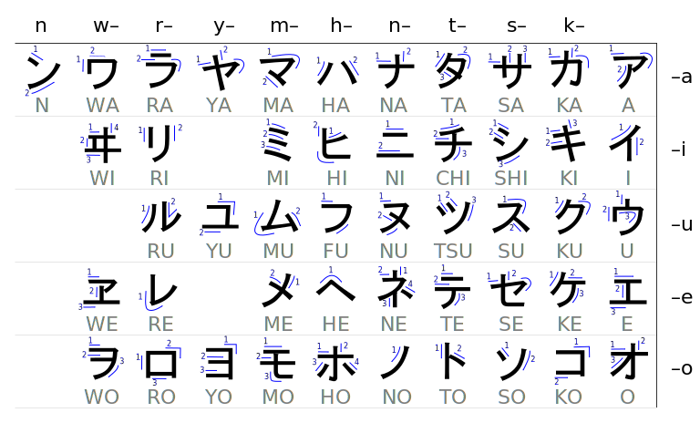

IMAGES USED FOR EDUCATIONAL PURPOSES, SEE WATERMARKS FOR
IMAGE CREDITS

There are times when you need to give things a little stroke ...
With image resources sourced from wikepedia/wikimedia/creative commons

 
